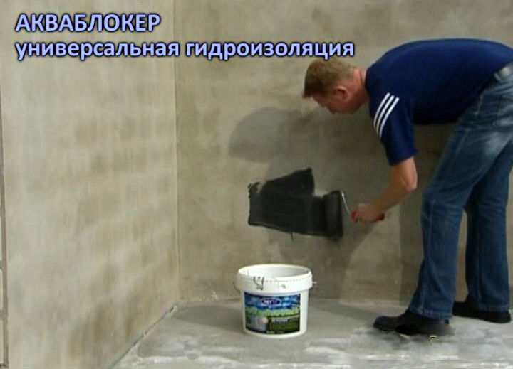
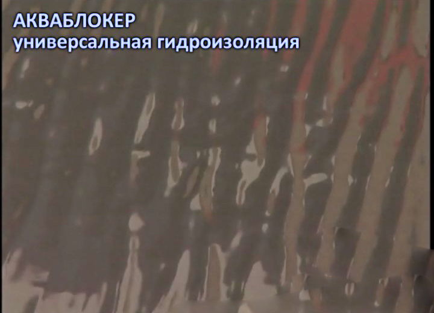
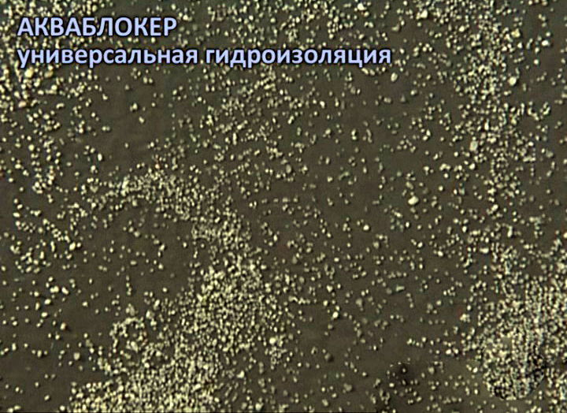
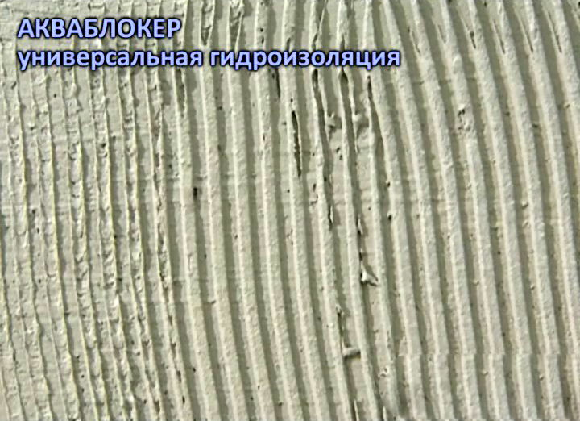
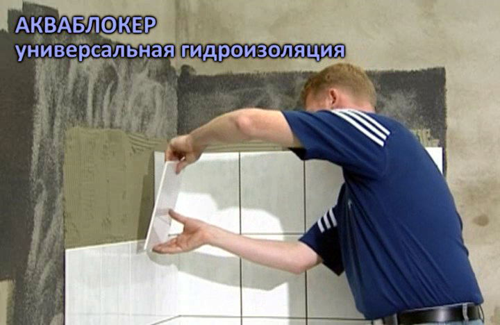
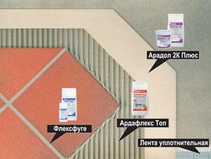
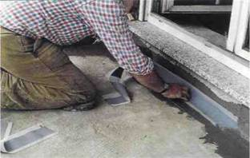
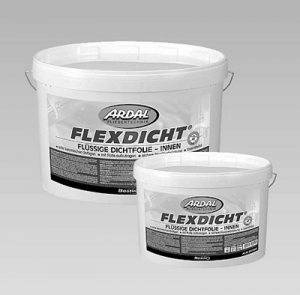
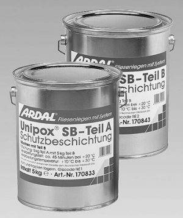

Гидроизоляция ванной
Гидроизоляция ванной комнаты, душевых, санузлов и других сырых помещений изнутри, а также их ремонт и укладка плитки в соответствие с европейскими нормами достаточно сложен и трудоемок. Существенно упростить этот процесс позволяют новые гидроизоляционные материалы, применяемые при укладке плитки, такие как: “жидкий пластик” Акваблокер, эластичные шламы Ардалон 1К плюс и Ардалон 2К плюс, эластичная гидроизоляция Флексдихт и эпоксидные материалы Унипокс, производства Ardal и Hey’Di - Германия.
1. Гидроизоляция ванной на основе ”жидкого пластика” Акваблокер
Акваблокер – это экологически чистый гидроизоляционный материал на основе MS-полимера. Выпускается готовым к употреблению и наносится с помощью кисти или валика. Отлично прилипает практически к любым материалам. При контакте с влагой воздуха превращается в прочный, водостойкий, резиноподобный эластичный материал, перекрывающий трещины до 10 мм.
Гидроизоляция ванной начинается с тщательной подготовки поверхности основания пола и стен. Поверхность должна быть прочной, без острых кромок, очищенной от грязи и разделительных слоев. Выбоины, трещины и неровности заделываются Расширяющимся раствором или Уплотнительным раствором. На подготовленное основание валиком или кистью равномерно по всей поверхности последовательно наносят два слоя Акваблокера (фото 1.).
Акваблокер наносится валиком на стенку ванной. Гидроизоляция ванной

1. Акваблокер наносится валиком на стенку ванной
Поверхность перед нанесением может быть сухой или слегка влажной (без стоячей воды и капель). В местах, наиболее подверженных образованию трещин (стыки между стенами, стыки между полом и стенами, места прокладки труб), в свежий нанесенный первый слой покрытия рекомендуется уложить Армирующее Полотно 100. Прежде чем наносить второй слой, следует дождаться “просыхания” первого слоя (фото 2.).
Вид свежий нанесенного слоя Акваблокера. Гидроизоляция ванной

2. Вид свеженанесенного слоя Акваблокера
Пока второй слой еще липкий, его посыпают кварцевым песком для создания “адгезионного мостика” между Акваблокером и клеем для плитки (фото 3.).
Еще липкий слой Акваблокера посыпают кварцевым песком зернистостью 0,6-1,0 мм. Гидроизоляция ванной

3. Еще липкий слой Акваблокера посыпают кварцевым песком зернистостью 0,6-1,0 мм
Затем, после завершения процесса полимеризации Акваблокера, делают укладку плитки, используя клеи для плитки: Ардал Бест S2, Ардафлекс Топ или Ардалит Про (фото 4., 5.).

Нанесение клея для плитки
4. Нанесение клея для для укладки плитки

Приклеивание плитки на Акваблокер
5. Укладка плитки на Акваблокер
Через 2-3 дня, после высыхания клея для плитки, можно заделывать швы между керамическими плитками затиркой, например, Флексфуге. Полная информация о применении Акваблокера содержится в технических описаниях на материалы и в буклете.
2. Гидроизоляция ванной на основе шламов Ардалон 1К плюс и Адалон 2К плюс
Схема применения шламов Ардалон 2К плюс и Ардалон 1К плюс

6. Общая схема применения шламов Ардалон 2К плюс и Ардалон 1К плюс
Ардалон 1К плюс - однокомпонентный эластичный гидроизоляционный шлам, затворяемый водой. После схватывания он становится водонепроницаемым, эластичным и перекрывает образующиеся трещины, легко наносится щеткой, валиком или шпателем.
Гидроизоляция ванной начинается с подготовки. Основания стен и пола должны быть прочными, достаточно сухими, чистыми, с мелкопористой поверхностью, без выбоин, видимых крупных трещин. Выбоины, трещины и неровности заделывают Расширяющимся раствором или Уплотнительным раствором.
Далее, шлам Ардалон 1К плюс замешивается с водопроводной водой в чистой ёмкости мешалкой до однородного состояния без комков. После вызревания смеси шлам Ардалон 1К плюс ещё раз тщательно перемешивается, после чего его можно наносить. Ардалон 1К плюс нельзя наносить при температуре ниже +5 градусов С или выше +30 градусов С.
Наносят шлам в 2 слоя. Суммарная толщина двух слоев должна быть не менее 2 мм. Перед нанесением первого слоя сухие и впитывающие поверхности следует слегка смочить. Шлам можно наносить при помощи кисти или мастерка. В стыки между стенами и в стыки между полом и стенами, в свеженанесенный первый слой шлама рекомендуется уложить уплотнительную Ленту Ардал 100/120. Второй слой наносится после того, как первый схватится достаточно сильно, чтобы его не повредить. Через 1 - 2 дня после нанесения шлама Ардалон 1К плюс на него можно приклеивать керамическую плитку. Для этого рекомендуется использовать тонкослойный клеевой раствор Ардафлекс Топ или Ардал Бест S2, а для заделки швов между плитками - затирку Флексфуге. Полная информация содержится в технических описаниях на материалы.
Ардалон 2К плюс - двухкомпонентный эластичный гидроизоляционный материал, состоящий из порошкообразного компонента А (15 кг) и жидкого компонента В (5 кг). После схватывания приобретает водоотталкивающие свойства, становится эластичным. В отличие от Ардалон 1К плюс, Адалон 2К плюс перекрывает вновь образующиеся трещины шириной до 2,0 мм.
Гидроизоляция ванной начинается с подготвки оснований стен и пола. Они должны быть прочными, ровными, достаточно сухими, чистыми, с мелкопористой поверхностью, без выбоин, видимых крупных трещин и острых кромок. Неровности, выбоины и трещины устраняются с помощью Расширяющегоя раствора или Уплотнительного раствора. Поверхность не должна содержать вещества, способные ухудшить прилипание покрытия (масла, высолы, загрязнения).
Далее, в чистую емкость выливают часть жидкого компонента В, высыпают туда порошковый компонент А, а затем перемешивают миксером до однородного состояния без комков. Затем доливают остаток жидкого компонента В и еще раз тщательно перемешивают. Ардалон 2К плюс нельзя наносить при температуре ниже +5 градусов или выше +30 градусов. Ардалон 2К плюс наносится минимум в два слоя. Суммарная толщина гидроизоляционного покрытия из двух слоёв должна быть не менее 2,4 мм.
Ардалон 2К плюс наносится при помощи щетки или шпателя. Второй слой наносится после того, как первый схватится достаточно сильно, чтобы его не повредить. В стыки между стенами и в стыки между полом и стенами, в свеженанесенный первый слой шлама рекомендуется уложить уплотнительную Ленту Ардал 100/120. Спустя 1-2 дня после нанесения Ардалон 2К плюс на него можно укладывать керамическую облицовку. Для этого рекомендуется использовать тонкослойные клеевые растворы Ардал Бест S2 или Ардафлекс Топ, а для заделки швов между плитками - затирку Флексфуге. Полная информация содержится в технических описаниях на материалы и в буклете.
В стыки пол-стена укладывается уплотнительная лента Ардал 100/120

7. В стыки пол-стена укладывается уплотнительная лента Ардал 100/120
Стык пол-стена с уплотнительной лентой Ардал 100/120 тщательно утрамбовывается

8. Стык пол-стена с уплотнительной лентой Ардал 100/120 тщательно утрамбовывается
Шлам наносится минимум в два слоя при помощи щетки или шпателя

9. Шлам наносится минимум в два слоя при помощи щетки или шпателя
Спустя 1-2 дня после нанесения шлама на него можно укладывать плитку

10. Спустя 1-2 дня после нанесения шлама на него можно укладывать плитку
3. Гидроизоляция ванной на основе ”жидкой пленки” Флексдихт
Флексдихт - представляет собой полимерную дисперсию, которая не содержит растворителей, наносится валиком и после высыхания превращается в эластичное и герметичное покрытие.

Общая последовательность работ сводится к следующему. Вначале поверхность пола и стен очищается от грязи и разделительных слоев. Она должна быть прочной и сухой. Если поверхность впитывающая, то на нее щеткой наносится грунтовка Грундфестигер. После высыхания грунтовочного слоя, необходимо валиком с коротким ворсом нанести на поверхность пола и стен первый слой Флексдихт. При наличии деформационных швов в стыках пола и стен в первый слой Флексдихт укладывается Лента Ардал 100/120. После высыхания первого слоя следует нанести второй слой Флексдихт. Затем, используя тонкослойный клеевой раствор Ардафлекс Топ, наклеить керамическую плитку на слой Флексдихт. Через 2-3 дня, после его высыхания, заделывают швы между керамическими плитками, например, затиркой Флексфуге. Полная информация содержится в технических описаниях на материалы и в буклете.4. Гидроизоляция ванной на основе системы эпоксидных материалов Унипокс

Материалы Унипокс – это согласованный набор эпоксидных материалов высокой химической и механической стойкости, включающий: защитное покрытие Унипокс SB, универсальный клей Унипокс 810 и клей для пола Унипокс FE, затирки - Унипокс 842-849, Унипокс MS, Унипокс 3К 823 и Унипокс Мульти. Они позволяют создавать надежную, долговременную химически стойкую гидроизоляцию с керамической облицовкой на объектах, испытывающих длительную нагрузку воды, мороза, замораживания/оттаивания, а также там, где цементные растворы не пригодны вследствие их недостаточной устойчивости.Процесс гидроизоляции ванной начинается с подготовки поверхности пола и стен. На впитывающие поверхности, перед нанесением Унипокс SB, необходимо нанести грунтовку Унипокс SB. Все материалы двухкомпонентные и перед употреблением смешиваются в необходимых пропорциях.
Чтобы достичь надежной герметизации, на основание следует нанести как минимум 2 слоя Унипокс SB, каждый толщиной 1 мм. Второй слой защитного покрытия наносится после затвердевания первого слоя. Последний нанесенный слой Унипокс SB в свежем состоянии по всей поверхности посыпается кварцевым песком зернистостью 0,6-1,2 мм. Этот песок играет роль усилителя сцепления с эпоксидными клеями. Укладка плитки или плит осуществляется только после отвердения защитного покрытия с применением клея Унипокс 810 или Унипокс FE.
Приготовленный и размешанный клей наносится на поверхность гладкой стороной кельмы. Толщина слоя должна составлять 2-3 мм. Затем зубчатой стороной кельмы наносятся борозды таким образом, чтобы на поверхности остались только клеевые ребра и на них укладывается плитка. Не менее чем через 24 часа после наклейки керамической облицовки можно приступать к заделке швов.
Если облицовка подвергается сильному воздействию со стороны кислот, химикатов или агрессивных чистящих средств, то для заделки швов рекомендуется использовать эпоксидные материалы Унипокс 842-849, Унипокс MS, Унипокс 3К 823 и Унипокс Мульти. В остальных случаях можно применять цементосодержащую массу Флексфуге для заделки швов. Полная информация содержится в технических описаниях на материалы и в буклете.